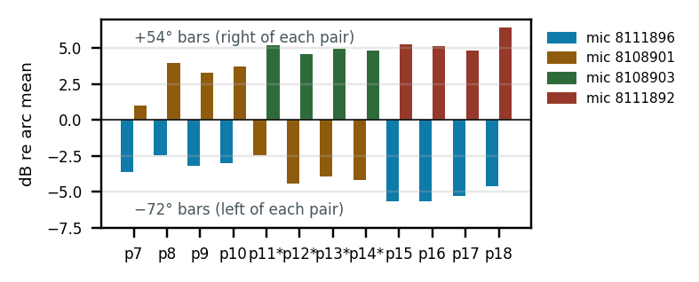

SoundVisualizer · arc validation · what the chamber does to the polar
For these runs the arc was laid flat (horizontal), with the propeller axis vertical. All microphones then sit at the same height, in the propeller plane, around the propeller. A perfect setup reads the same level at every position: a circle. We did this twelve times (keys prop7–18, 1–2 Sept 2026, PWM 1900). What is left after we remove each microphone's own offset is the effect of the room.

Not the microphones, with one exception. Because the microphones at +72° and +54° were swapped after prop10, and the arc was turned around for prop11–14, we can tell apart what belongs to a microphone and what belongs to a position. Ten microphones agree within ±1.8 dB in every band. Microphone 811-1892 reads 2–6 dB too low from 125 Hz to 2.5 kHz. Its calibration file does not match the capsule (its sensitivity value, −10.63 dB, is the least negative of the set, while the raw capsule is only about 1 dB low). When it sat at +54° it made the room error look like 7 dB. Take it off the arc or measure it again.
Not a labelling error. prop11, 12, 13 and 14 were measured with the arc turned around. Their patterns match the mirror image of the other runs (correlation +0.79 to +0.98). Plotted by label, the dip appears on the other side. Plotted by physical position, they agree with the other eight runs.
Not one frequency. The error sits in three separate bands, 200–250 Hz, 630–1000 Hz and 3150 Hz, and nowhere else (Fig. 2). Rajmane and Baumann (DAGA 2016) put steel plates into a good chamber and found that a plate only shows up once the wavelength is shorter than the plate: a 35 cm plate from 1.25 kHz, a 10 cm plate from 3.15 kHz. So three bands point to three objects of different size: about 1.5 m (floor, table or wall), about 0.4 m (stand base or a bar of the arc frame), about 0.1 m (a microphone clamp or mount).


500–2000 Hz, microphone offsets removed; * = arc turned around. The dip at −72° and the bump at +54° keep their size no matter which microphone sits there.
With the arc flat, all microphones are at the same height. Floor and ceiling reflect the same into every microphone and cannot make one half of the arc differ from the other. The pattern we see is one-sided: the −36°/−54°/−72° side reads low, the +36°/+54° side reads high. So the surface is beside the propeller, in the horizontal plane: the wall, the corner or an object on the −angle side of the rig. The dip at 240 Hz that moves with motor speed means the bounced path is about 0.7 m longer than the direct one (half a wavelength), so that surface is close, within about half a metre of the microphones. The −72° dip at 630–1000 Hz (wavelength about 0.4 m) is a smaller object at the −90° end of the arc, on the corner side.
2004__6in__unset__dp1-baseline-horizontal-<key>, 11 microphones × 2.0 s, calibrated; microphone serials 810-/811-xxxx given by their last four digits| key | capture (PWM 1900) | arc | +72/+54 |
|---|---|---|---|
| prop7 | 2026-09-01 16:42:31 | norm | 1892/8901 |
| prop8 | 2026-09-01 16:44:39 | norm | 1892/8901 |
| prop9 | 2026-09-01 16:50:45 | norm | 1892/8901 |
| prop10 | 2026-09-01 16:55:35 | norm | 1892/8901 |
| key | capture (PWM 1900) | arc | +72/+54 |
|---|---|---|---|
| prop11 | 2026-09-02 13:18:49 | 180° | 8901/1892 |
| prop12 | 2026-09-02 14:24:12 | 180° | 8901/1892 |
| prop13 | 2026-09-02 14:34:37 | 180° | 8901/1892 |
| prop14 | 2026-09-02 14:37:02 | 180° | 8901/1892 |
| key | capture (PWM 1900) | arc | +72/+54 |
|---|---|---|---|
| prop15 | 2026-09-02 15:48:59 | norm | 8901/1892 |
| prop16 | 2026-09-02 15:54:26 | norm | 8901/1892 |
| prop17 | 2026-09-02 16:52:44 | norm | 8901/1892 |
| prop18 | 2026-09-02 17:08:19 | norm | 8901/1892 |
Left out: the 31 Aug keys and prop1–prop6; their patterns match neither arc orientation, so the rig or room was different then. "180°" = label +e was physically at −e.
Every level in the twelve runs (11 microphones × 19 third-octave bands × 12 runs) is written as three parts added together: run gain + position error + microphone offset. The three parts are found by least squares, i.e. the single set of values that fits all 12 × 11 levels best in every band. Run gain takes up any level difference between runs (RPM, day, load). Microphone offset takes up each serial's own error after calibration. Position error is what is left that belongs to a spot on the arc; it is forced to average zero over the eleven spots, so it reads as dB from a circle. That is what Figs. 1 and 2 show.
The turned-around runs are handled before the fit: for prop11–14 the label +e is entered as physical −e, so "−72°" always means the same spot in the room. The four microphone offsets and the eleven position errors can be told apart only because the same spot was covered by different microphones (the swap after prop10 and the four turned runs). Without that, a low microphone and a low spot would be indistinguishable. Fig. 3 is not from the fit: each bar is one run, level at the spot minus the mean of all eleven microphones in that run, with that microphone's fitted offset subtracted. Checks: mirroring prop11–14 lowers the run-to-run scatter; the −72° dip and the +54° bump keep their size with three different microphones in the spot. Spectra: Welch 4096-point Hann, UMIK-2 calibration as the app applies it, third-octave sums 125 Hz–8 kHz. Code: scripts/arc_error_map.py, function fit; inputs and outputs in docs/analysis/.